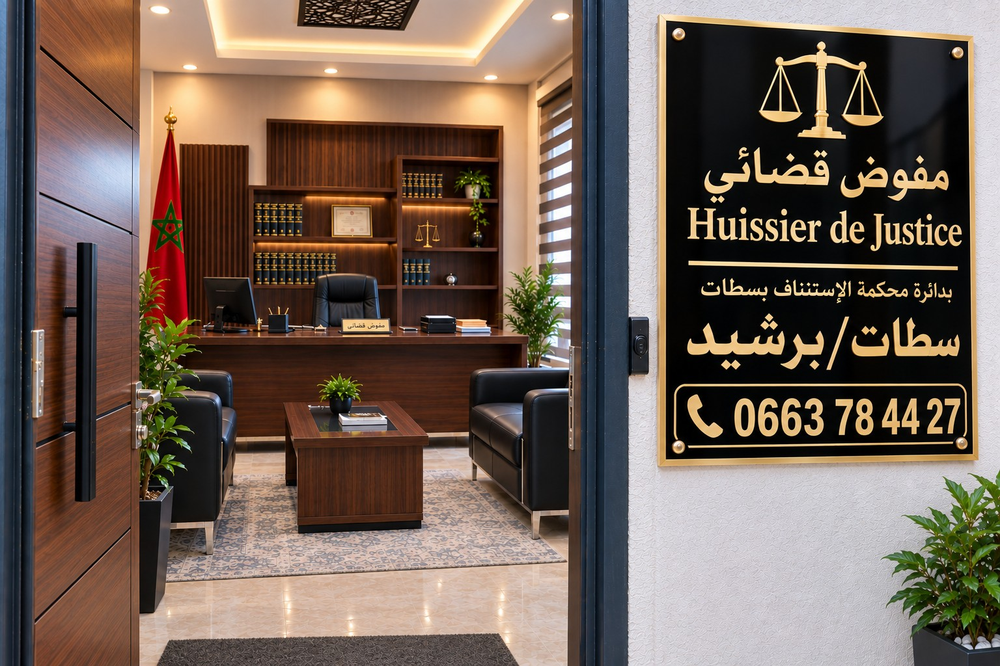

مفوض قضائي
Huissier de Justice
سطات / برشيد / بن أحمد
خدمات مهنية في التبليغ والتنفيذ والمعاينات وتوثيق الوقائع.
📞 0663784427
مجالات العمل
خدمات مهنية ضمن الاختصاصات المخولة قانونًا.
التبليغ
تبليغ مختلف الوثائق والاستدعاءات والإشعارات والإنذارات وفق الإجراءات القانونية.
التنفيذ
تنفيذ المقررات القضائية والسندات التنفيذية وفق الضوابط القانونية.
المعاينات
إجراء المعاينات المادية وتوثيق الوقائع والحالات كما هي.
خدمات المفوض القضائي وفق القانون رقم 46.21
يهدف هذا الركن إلى تقريب مهام المفوض القضائي من المواطن والمقاولة وباقي شركاء العدالة، من خلال تقديم شرح مبسط للخدمات التي يباشرها المفوض القضائي وفق القانون المنظم للمهنة. فالمفوض القضائي ليس مجرد منفذ لإجراءات بعد صدور الأحكام، بل هو فاعل قانوني يساهم في التبليغ، والتنفيذ، والمعاينة، وتوثيق الوقائع، والوقاية من النزاعات، وضمان نفاذ الحقوق داخل الآجال والضوابط القانونية.
وتتمثل خدمات المفوض القضائي، وفق القانون رقم 46.21، في ما يلي:
تبليغ المقالات والعرائض والطلبات والمذكرات القضائية
يقوم المفوض القضائي بتبليغ المقالات والعرائض وباقي الطلبات والمذكرات القضائية إلى الأطراف المعنية، وفق الشروط والإجراءات المنصوص عليها في قانون المسطرة المدنية وقانون المسطرة الجنائية والنصوص الخاصة. وتعد هذه الخدمة أساسية لضمان علم الأطراف بالإجراءات وتمكينهم من ممارسة حقوقهم داخل الآجال القانونية.
تبليغ الاستدعاءات الصادرة عن الجهات القضائية والإدارات والمؤسسات العمومية
يتولى المفوض القضائي تبليغ الاستدعاءات الصادرة عن مختلف الجهات القضائية، وكذا الإدارات والمؤسسات العمومية، بما يضمن وصولها إلى المعنيين بها بطريقة قانونية موثقة. وتساهم هذه الخدمة في انتظام سير العدالة والإدارة وضمان سلامة المساطر.
تبليغ الإشعارات والإنذارات والاستدعاءات بطلب مباشر
يمكن لكل ذي مصلحة أن يطلب من المفوض القضائي تبليغ إشعار أو إنذار أو استدعاء إلى شخص أو جهة معينة، متى كان ذلك في إطار القانون. وتعد هذه الخدمة وسيلة عملية لإثبات الإعلام أو التنبيه أو المطالبة قبل تفاقم النزاع أو قبل اللجوء إلى مساطر قضائية أخرى.
إجراء المعاينات المادية المجردة من كل رأي
يقوم المفوض القضائي بإنجاز معاينات مادية مجردة، إما بناء على أمر قضائي أو بطلب مباشر من المعني بالأمر. وتقتصر المعاينة على وصف الوقائع أو الحالة المادية كما هي، دون إبداء رأي أو تحليل أو تقدير قانوني، مما يجعلها أداة مهمة لتوثيق الوقائع وحفظ الدليل.
عروض الوفاء والإيداع
يباشر المفوض القضائي إجراءات عروض الوفاء والإيداع، سواء بناء على أمر قضائي أو بطلب مباشر من المعني بالأمر. وتفيد هذه الخدمة في الحالات التي يرغب فيها شخص في إثبات استعداده للوفاء بالتزام معين، أو وضع مبلغ أو شيء معين رهن إشارة من له الحق فيه، وفق الضوابط القانونية.
تبليغ المقررات القضائية والسندات التنفيذية
يتولى المفوض القضائي تبليغ المقررات القضائية والسندات التنفيذية إلى المعنيين بها، حتى ينتج التبليغ آثاره القانونية. وتكتسي هذه الخدمة أهمية خاصة لأنها تشكل مرحلة أساسية قبل مباشرة بعض إجراءات التنفيذ أو ترتيب الآثار القانونية المرتبطة بالتبليغ.
تنفيذ المقررات القضائية والسندات التنفيذية
يقوم المفوض القضائي بتنفيذ المقررات القضائية والسندات التنفيذية، مع الرجوع إلى القضاء عند وجود أي صعوبة قانونية أو واقعية تعترض التنفيذ. وتعد هذه المهمة من أهم أدواره، لأنها تحول الحكم أو السند من وثيقة قانونية إلى أثر عملي يحمي الحقوق ويضمن فعاليتها.
إنجاز محاضر الاستجواب بناء على أمر قضائي
ينجز المفوض القضائي محاضر الاستجواب متى صدر بذلك أمر قضائي. وتتم هذه الخدمة في حدود ما يأمر به القضاء، وبما يضمن توثيق الأسئلة والأجوبة أو التصريحات المرتبطة بالإجراء المطلوب.
التحصيل الجبري للديون العمومية
يقوم المفوض القضائي بإجراءات التحصيل الجبري للديون العمومية وفق مقتضيات مدونة تحصيل الديون العمومية، وذلك بمقتضى سند تنفيذي. وتهم هذه الخدمة الديون المستحقة لفائدة الجهات العمومية، وتباشر وفق الضوابط القانونية الخاصة بهذا المجال.
التحصيل الودي للديون الخاصة الحالة الأداء
يمكن للمفوض القضائي مباشرة التحصيل الودي للديون الخاصة الحالة الأداء، متى كانت ثابتة بمقتضى سند تنفيذي. وتساعد هذه الخدمة على تسهيل استخلاص الحقوق بطريقة مهنية ومنظمة، قبل أو دون اللجوء إلى إجراءات تنفيذية أكثر تعقيداً.
إنجاز محاضر البيوع بالمزاد العلني التي تجريها الإدارات والمؤسسات العمومية
ينجز المفوض القضائي محاضر البيوع بالمزاد العلني التي تنظمها الإدارات والمؤسسات العمومية، وفق القوانين الجاري بها العمل. وتضمن هذه الخدمة توثيق مراحل البيع ونتائجه بطريقة رسمية ومهنية.
إنجاز محاضر البيوع بالمزاد العلني بطلب من الخواص
يمكن للمفوض القضائي إنجاز محاضر البيوع بالمزاد العلني التي يشرف عليها الأشخاص الخاضعون للقانون الخاص، وذلك بطلب مباشر من المعنيين بالأمر. وتوفر هذه الخدمة توثيقاً مهنياً لعملية البيع، بما يعزز الشفافية وحفظ الحقوق.
إنجاز محاضر انعقاد الجموع العامة
ينجز المفوض القضائي محاضر انعقاد الجموع العامة بناء على أمر قضائي، وبطلب ممن له المصلحة. وتفيد هذه الخدمة في توثيق انعقاد الجمع العام، والحضور، وسير الأشغال، والقرارات المتخذة، بما يساعد على تفادي المنازعات أو إثبات الوقائع التنظيمية المرتبطة بالجمع.
⚖️ دائرة استئنافية سطات ⚖️
⬇️ دائرة ابتدائية سطات
- سطات Settat
- البروج al beroj
- أولاد فارس الحلة oulad faris el halla
- أولاد بوعلي النواجة oulad bouali ennouaja
- مسكورة Meskoura
- أولاد عامر oulad amer
- لقراقرة Lagragara
- بني خلوك Beni Khlouk
- سيدي بومهدي Sidi Boumehdi
- سيدي احمد الخدير Sidi Ahmed El Khedir
- عين بلال Ain Blal
- اولاد افريحة oulad friha
- دار الشافعي Dar Chafai
- سيدي العايدي Sidi El Aidi
- مزامرة الجنوبية Mzamza Janoubia
- كيسر Kssar
- ريما Rima
- أولاد الصغير oulad Sghir
- بني يكرين Beni Yekrine
- الثوالث Twaleth
- مشرع بن عبو Mchraa Ben Abbou
- سيدي محمد بن رحال Sidi Mohamed Ben Rahal
- اخميسات الشاوية Akhmissat Chaouia
- أولاد سعيد oulad sais
- الحوازة El Haouaza
- امزورة Amzoura
- كدانة Kdana
⬇️ دائرة ابتدائية برشيد
- برشيد Berrechid
- الكارة Lkaira
- أولاد عبو oulad Abbou
- سيدي رحال الشاطئ Sidi Rahal Chatii
- حد السوالم Had essoualem
- الدروة Deroua
- لحساسنة Lhassasna
- سيدي المكي Sidi Mekki
- زاوية سيدي بنحمدون Zaouia Sidi Benhamdoun
- لغنيميين Lghnimiyine
- بن معاشو Ben Maachou
- سيدي عبد الخالق Sidi Abdelkhalek
- الساحل أولاد احريز Sahel oulad Hriz
- السوالم الطريفية Essoualem Trifia
- أولاد زيان oulad Ziane
- قصبة بن مشيش Kasba Ben Mchich
- جاقمة Jaqma
- لمباركيين Lmbarkiyine
- رياح Riah
- الفقرا أولاد عمرو Fokra oulad Amrou
- أولاد صباح oulad Sabah
- أولاد زيدان oulad Zidan
⬇️ دائرة ابتدائية بن أحمد
- بن أحمد Ben Ahmed
- لولاد Loulad
- أولاد مراح oulad Mrah
- انخيلة Enkhila
- لخزازرة Lkhzazra
- مكارطو Mekarto
- سيدي الذهبي Sidi Eddahbi
- أولاد امحمد oulad Mhammed
- عين الضربان- لحلاف Ain Dhrban- Lahlaff
- بوكركوح Boukerkouh
- سيدي عبد الكريم Sidi Abdelkrim
- منيع Mniaa
- سيدي حجاج Sidi Hajjaj
- أولاد فارس oulad Faris
- مريزيك Mrizig
- السكامنة Skamena
- أولاد شبانة oulad Chbana
- واد النعناع Oued Naanaa
- رأس العين الشاوية Ras El Ain Chaouia